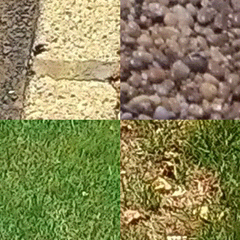
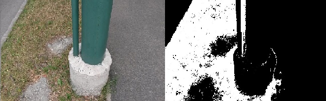
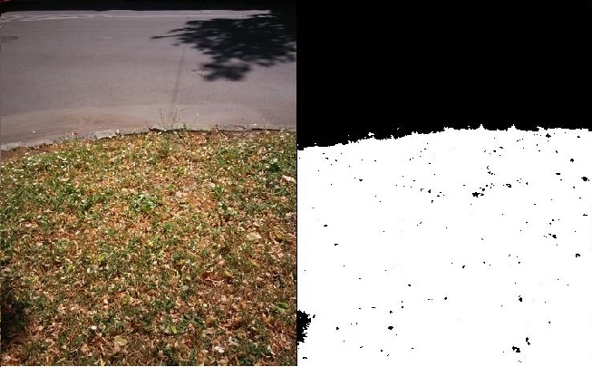
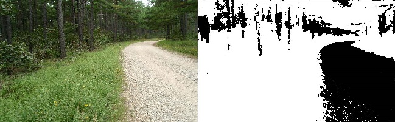
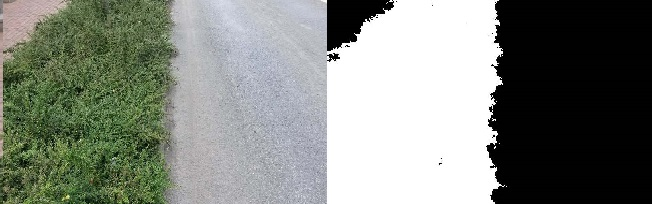

Make it difficult
Pre - processing
Preprocessing is an significant and diverse set of image preparation steps. It is used for eliminate or minimalize the problems with dataset. It can distinguish several types of this method.
First of all we chose to normalize the image, which can be, for example, by improving brightness of the image.For that we were using image resampling and enhancing the greyscale contrast.
Secondly we decided to denoise the dataset to enhance the quality of imput image. For that we used the several types of filtering. The results are shown below.
Afterwards by using particular types of mathematical operations we tried to further improve the picture by sharping, smoothing or blurring it. Of course, it was depending of the input image. The results can be seen below.
Recognizing textures
Texture is another feature that can help to segment images into regions of interest and to classify them. Texture gives us data about the spatial arrangement of the hues or intensities in the image.
The greatest difficulty in texture analysis is defining what texture is. There are two principal approaches:
- structural approach where texture is a kit of basics texels in regular and repeated relations;
- statistical approach where texture is a quantitative measure of arrangement of intensities in a given area.
We found the database with natural pattern of the vegetation and we added a few more for specifying the patterns of particular parts of the flora. We create the negative and positive examples of the scenes in nature. The few of them are showed below.

We noticed, that this way to recognize the vegetation on the images is dependent of the size of the database, and the quality of the images, so it is not the easiest and effective method to achieve the goal. Other obstacle is that the vegetation has no specify pattern.
Machine learning
We tried to use different classifiers (Gaussian Naive Bayes, SVM, Decision Tree and Random Forest) to optimize model hyper parameters using 10 fold cross validation on training set. Instead of using all features and keeping possibly irrelevant or redundant features that increases the computation time and possibly in the end lead to worse trained model, we decided to use feature selection techniques (removing low variance features, close to constant values), keeping k-best features with respect to information gain and correlation coefficient score, where k is hyper parameter of model that is being optimized.
Highest accuracy, recall and F1 score were achieved using RandomForrest Classifier (both precision and recall on test set above 90%). SVM with linear kernel provided a bit worse results (70% in both precision and recall) possibly due to small amount of texture data (70 textures for positive and negative samples).
Downside of machine learning base classifier approach is that is highly dependent on texture dataset.
To obtain accurate model, large dataset has to be obtained so the model could generalize. That especially goes samples for non-vegetation class.
The results of some mechanism can be seen below.




Post - processing
After classification, produced image is patchy so we are using simple morphology operations (dilation and erosion) to remove areas too small to be treated as vegetation and to fill in the patchy areas.